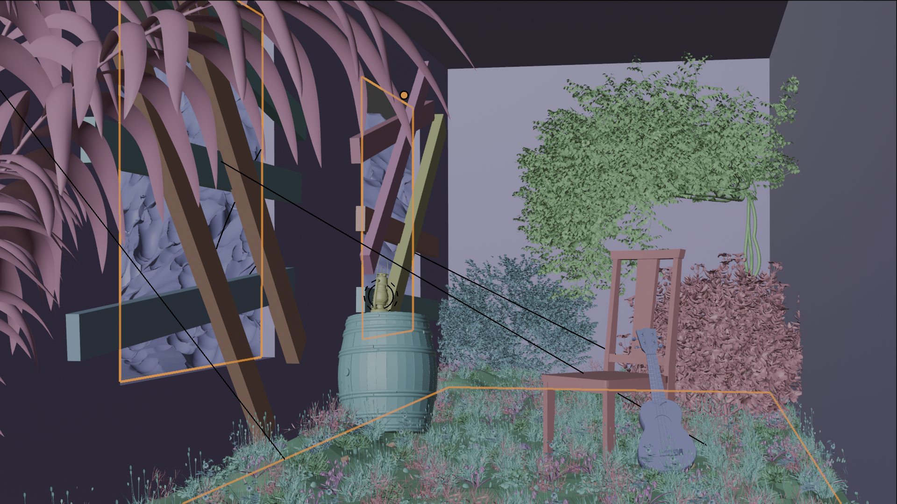
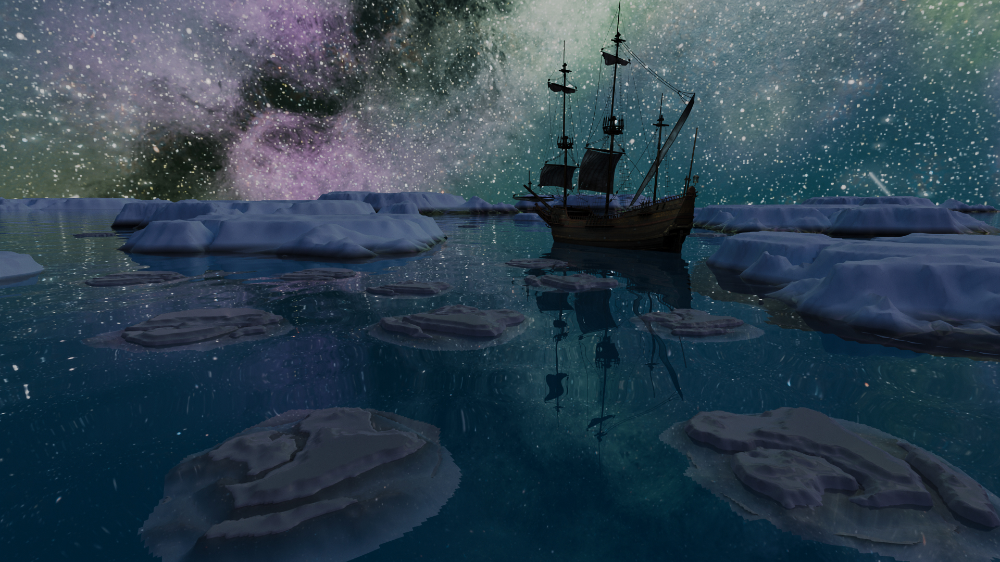

INTÉRIEUR
ABANDONNÉ
Scroll pour explorer ↓
Quand la nature reprend ses droits.
Un lieu.
Une histoire silencieuse.
Le Concept
Un intérieur abandonné progressivement repris par la nature. Des objets — un tonneau, une guitare — apportent une dimension narrative en suggérant une présence passée. La végétation organique crée un sentiment de temps suspendu.
Vue d'ensemble · Atmosphère abandon
L'Approche Technique
Le travail s'est concentré sur l'éclairage naturel entrant par les fenêtres brisées, les textures usées des murs et du sol, ainsi que la végétation à l'aide de systèmes de particules. Le cadrage guide le regard vers les zones éclairées.

Détail particules · Végétation organiqueLe Résultat
Un rendu présenté de manière éditoriale. Ce projet a permis de développer des compétences avancées en shading, éclairage et composition naturaliste.
Rendu Final · Style éditorial

Ocean Arctique